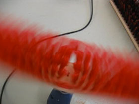
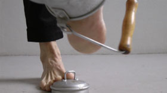

Anne Wodtcke
 Brush – Video 2014
– 14 Min.
Endloses Kreisen einer großen, roten Bürste, immer wieder unterbrochen von abdriftenden Bewegungen; erst als die Bürste sich langsamer dreht, ist zu erkennen, wer das Ganze in Gang hält. Leise ist ein Lied zu hören, bis die Bürste erneut mit ohrenbetäubendem, monotonem Sound in Schwung gebracht wird und das meditative, rhythmische Kreisen abermals seinen Lauf nimmt - da capo al fine.
In her experimental set-ups for sculpture Anne Wodtcke is interested in the sculptural process itself and the sculptural potential of simple movements of her body in inter- action with everyday items like brushes, twine, chairs or tires; they become time-based sculptures, documented in photo and/or video. Using before a constant position for the camera, she now tends to film manually and the sound becomes more important.
 Milk – Video 2013 – 6 Min
Rhythmisches Laufen, Schlagen und Tanzen mit einer Milchkanne – Erinnerungen an das Milchholen als Kind? – wobei der durch den unzweckmäßigen Gebrauch erzeugte Sound mehr und mehr in den Vordergrund rückt; reduzierte und dennoch kraftvolle, wiederkehrende Elemente kennzeichnen diese poetische Komposition über einen etwas aus der Zeit gefallenen, alltäglichen Gegenstand.
In her experimental set-ups for sculpture Anne Wodtcke is interested in the sculptural process itself and the sculptural potential of simple movements of her body in inter- action with everyday items like brushes, twine, chairs or tires; they become time-based sculptures, documented in photo and/or video. Using before a constant position for the camera, she now tends to film manually and the sound becomes more important.
Anne Wodtcke, geb. 1954 Berlin. Studium AdBK /LMU München. 2014 residency ISCP, NYC. 2011 Steiner-Stiftung München, 2009 residency FE, Pittsburgh.
Ausstellungen (Auswahl): 2014 BYOB, unpainted art fair. München – 2012 under construction, Galerie der Künstler München – 2010 glyptikes afigisis, Museum Alex Mylona Athen – 2009 heykelsi eylemler - sculptural narration, BM Suma Istanbul – 2008 sculpture is (e)motion, Galerie en passant Berlin